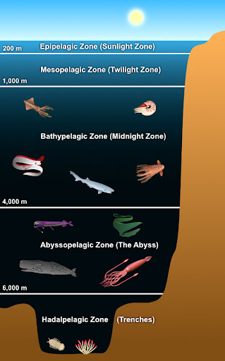

Why is the ocean so important?
Covering more than 70% of Earth’s surface, the ocean plays an essential role in each of our lives, no matter where we live. The ocean is the heart of our planet, pumping oxygen, nutrients, water and weather around the globe. This constant circulation directly and indirectly provides the food and water we need to live and forms the backbone of our economies. Although there is much more to learn, oceanographers have already made some amazing discoveries. For example, we know that the ocean contains towering mountain ranges and deep canyons, known as trenches, just like those on land. The peak of the world’s highest mountain— Mount Everest in the Himalaya , measuring 8.85 kilometers (5.49 miles) high—would not even break the surface of the water if it was placed in the Pacific Ocean’s Mariana Trench or Philippine Trench, two of the deepest parts of the ocean.
Ocean scientists split the ocean into vertical and horizontal zones based on physical and biological conditions. Horizontally the ocean covers the oceanic crust, which it shapes. Where the ocean meets dry land it covers relatively shallow continental shelfs, which are part of Earth's continental crust. Human activity is mostly coastal with high negative impacts on marine life.
Did you know there is enough salt in the ocean to cover the whole surface of the Earth? If the salt in the ocean could be removed and spread evenly over the Earth’s land surface, it would form a layer more than 500 feet (166 meters) thick, about the height of a 40-story office building. Why is the ocean salty? Salt comes mainly from land rocks, carried to the sea by rain and rivers. It also enters from seafloor hydrothermal vents.
Life Beneath the Waves
It is unknown how many different species call the ocean their home. With many marine ecosystems suffering from rising sea temperatures, pollution, and other problems, some oceanographers believe the number of species is dropping. Still, there may be many positive surprises waiting for oceanographers in the years ahead. It could be that more than 90 percent of the ocean’s species are still undiscovered, with some scientists estimating there are anywhere between a few hundred thousand and a few million more to be discovered. Currently, scientists know of around 226,000 ocean species.Learn more about marine life here!